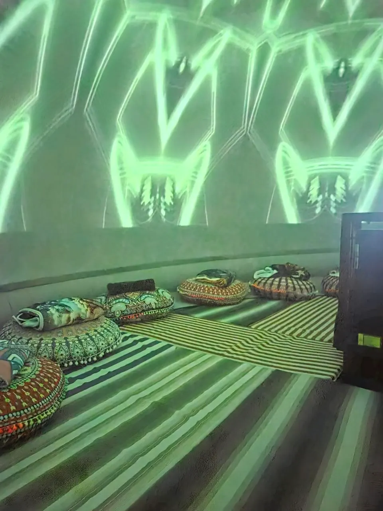

מסע טרנס-וורבליהחלל שבין האותיות · למי שמחפש
יש רגע, אחרי שהמילה כבר נאמרה, שבו ממשיך משהו בלי שם. המסע הזה הולך לשם.
על מה המסע הזה?
רוב מה שאנחנו עושים עם העולם הפנימי שלנו הוא לתרגם אותו למילים. נותנים שם לתחושה, מסבירים, מספרים. אבל יש שכבה שלמה שממשיכה בדיוק שם, אחרי שהמילה כבר נאמרה.
מסע טרנס-וורבלי הוא הזמנה ללכת אל מה שבין האותיות. החוויה מתקיימת בקבוצה קטנה של עד עשרה משתתפים, בשכיבה בתוך מרחב אימרסיבי של הקרנות 360°, עם הנחיה קולית חיה הנשמעת באוזניות. צליל, תמונה ומילה נפרשים סביבכם ומאבדים בהדרגה את הגבולות ביניהם, עד שתשומת הלב נודדת אל המרווחים.
זהו מסע למי שכבר עשה עבודה פנימית, ויש לו שפה משלו לעולם הרגשי. לא צריך להבין מראש. צריך רק להיות מוכן להקשיב למה שאין לו עדיין שם.
טכנולוגיה בשרות הלב. בעולם שבו אנחנו תמיד מחוברים אבל לעיתים מנותקים מעצמנו, בית הרמזים בנמל יפו הוא מרחב של מסעות תודעה. החיבור בין חוכמה עתיקה לטכנולוגיה ב-VR 360° ללא משקפיים יוצר מעטפת שמאפשרת לעצור ולפגוש את מה שמבקש להגיע.
מבנה המסע

הגעה וכוונה
מגיעים, מתכנסים בקבוצה קטנה של עד עשרה, בוחרים את הכוונה שאיתה נכנסים, וחובשים אוזניות.
המסע
שכיבה בתוך מרחב אימרסיבי של הקרנות 360°, בליווי הנחיה קולית חיה. צליל, תמונה ומילה נפרשים סביבכם ומתערבבים זה בזה, ותשומת הלב נודדת אל החללים שביניהם.
נחיתה ומעגל
חזרה איטית. מתיישבים יחד, ויש מקום לתת מילים למה שעלה, או להשאיר אותו בלי. שתי הדרכים נכונות.
למי זה
- מיועד למי שכבר מכיר עבודה פנימית מכל סוג, ויש לו שפה משלו לעולם הרגשי.
- אם אתה מזהה את הרגע שבו המילה נגמרת ומשהו עדיין ממשיך, זה בשבילך.
מי מנחה

יוצר סדנאות, חוויות ומרחבים טקסיים להרחבת הלב והתודעה. מאמין בכוחה המרפא של יצירה משותפת כדרך להתחבר למהותנו, לקהילתנו ולעולם.

כמו שהיד המורָה על הירח אינה הירח אלא רק מורָה את הכיוון, כך מה שעולה בחוויה עצמה רומז לנו להרים את המבט קצת למעלה, ולהרחיב את הדיבור הבלתי מילולי עם היקום ועם עצמנו. מי ייתן ובית הרמזים יהיה כר פורה לתפילות חדשות, עבור כולנו.
שאלות נפוצות
צריך ניסיון קודם?
כן. המסע מיועד למי שכבר יש לו ניסיון בעבודה פנימית מכל סוג, ושפה משלו לעולם הרגשי.
מה זה מסעות תודעה בכיפת VR?
הם שילוב של מדיטציה מודרכת בתוך כיפת 360° בשכיבה על מזרן עם אוזניות, ללא משקפי VR.
מה קורה במהלך החוויה?
שוכבים על מזרן עם אוזניות. מעליכם כיפת 360° המציגה מרחבים, אור ותנועה. נשמעת הנחיה ומוזיקה, והמעבר בין התקרבות לחסך חושי והצפה רב חושית, בין כניסה פנימה והחוצה, מאפשר להתקרב קצת לעולם הבלתי מילולי. כמו מדיטציה מסורתית שבה עולה מה שנכון לנו, כך כאן אפשר לגשת למה שנכון לנו בכל רגע.
מה זאת אומרת ההזמנה היא להגיע עם כוונה למסע?
כוונה היא ההקשר הפנימי שאיתו מגיעים: שאלה, תפילה, איכות, ואפילו "לבוא בלי כוונה" זו כוונה. הכוונה מכווננת את תשומת הלב לאורך החוויה, בעדינות.
איך מרגיש "VR ללא משקפיים"?
זו הקרנה פנורמית מסביבנו, אין משקפיים. החוויה עדינה לעיניים ונוחה גם למי שמתקשה עם משקפי VR.
מה כדאי להביא/ללבוש?
לבוש נוח ושכבות קלות לפי הצורך. המסע בשכיבה על מזרן עם אוזניות, בכיפה נעימה, הכניסה לכיפה בגרביים. יש גרביים נקיות וספריי רגליים למקרה הצורך :)
איך מגיעים והיכן חונים?
בית המכולות, ביתן 3, נמל יפו 3, תל אביב-יפו. חניון עירוני צמוד (כ-16 ₪ לשעה). תחבורה ציבורית: גם הרכבת הקלה באזור, נמל יפו 3 באפליקציות. מומלץ להגיע כ-20 דקות מראש, ולא ניתן להיכנס לאחר תחילת המסע.
בריאות ונגישות
רגישות לריצודים/אפילפסיה: החוויה אינה מתאימה. נגישות: המבנה והמקום נגישים, המסע מתקיים בשכיבה על מזרן בתוך כיפה מתנפחת. אם נדרשת התאמה מיוחדת, אנא צרו קשר מראש ונבדוק יחד את האפשרויות.
אם הגעת עד לכאן, ההזמנה היא לקרוא את הטקסט הבא לאט ועם תשומת לב:
היה סבלני כלפי מה שלא פתור בליבך, ואהוב את השאלות עצמן, כמו חדרים נעולים וספרים שעתה נכתבים בשפה זרה מאוד. אל תחפש את התשובות, שאינן יכולות להינתן לך בגלל שאתה לא יכול לחיות אותן. והנקודה היא, לחיות כל דבר. חייה את השאלות עכשיו. אולי לאחר מכן בהדרגה, בלי שתשים לב לכך, תחייה לתוך התשובה.
זמני (TEMP): תמונת hero + פוסטר וידאו = מתמונות lucid-dream · עדויות = placeholder
פתוח: נכס ויז'ואל אמיתי · slug (הצעה: transverbal) · אישור עיצוב → המרה ל-content.ts באתר החי